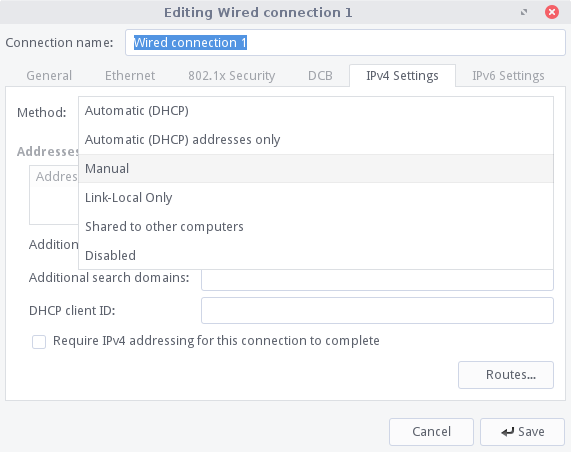
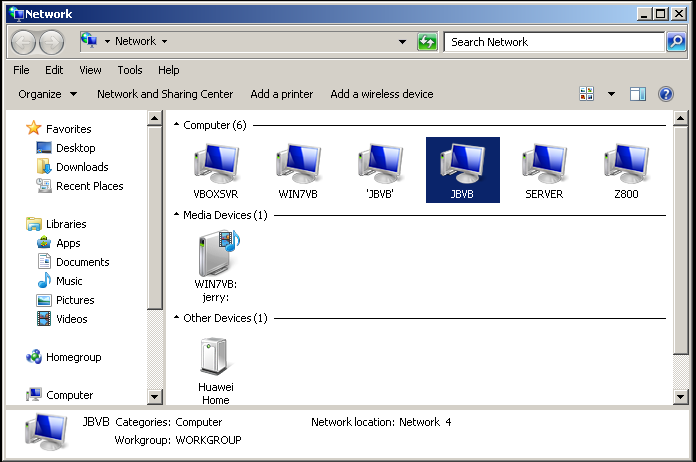
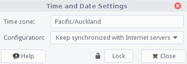

Accessing a NAS device
Connecting to the Internet - Wired
Connecting to the Internet - Wireless
Network Shares
- Create Linux Lite Shares
- Access Linux Lite shares from Windows
- Access Windows shares from Linux Lite
Setting the Time & Date
USB Broadband Modem
Connecting to the Internet - Wired
For the most part, you shouldn't have to configure anything in Network Connections if you are connected to your router with an ethernet cable. Your router is most likely already set up to give you an IP address automatically. So in this tutorial we will instead focus on connecting to your router with a static IP address.
Make sure Enable Networking has a tick beside it. The first step is to left click on the network tray icon and select Edit Connections.
If at any point you are asked to enter your password, please do so.
Highlight the Wired connection entry, and click on the Edit button.
Click on the IPv4 or IPv6 tab (consult your ISP on which one to use, IPv4 is the default) and select Manual.

Click on the Add button in Addresses an enter in the appropriate numbers. Be sure to include the DNS address. This is typically the same address as your router web login address (just the 4 sets of numbers). Click on Save to finish.
Connecting to the Internet - Wireless
In the system tray (near the clock, bottom right hand side of your screen) if you have no connection at the moment you will see a diagonal broken line with a red cross next to it. This denotes that there is no connection currently. Left click on the icon, if your wireless is working, you should have a list of wireless networks in your area, select your network. If you cannot see any wireless networks at all, your wireless device driver may not be installed, or for example your wireless switch on your laptop is in the Off position. If after you have checked this there are still no wireless networks showing, go to Menu, Settings, Install Drivers and see if your wireless device is listed. If it is, install the driver for it and continue with this tutorial. (You will need to connect to the internet using a wired connection in order to download and install the wireless driver.)
A box will pop up asking for your wireless password. If you would like to view your password while you type it, tick the 'Show password' box to ensure that you have entered your wireless password correctly.

You will then receive a notification in the top right hand corner of your screen once you are connected.

After a successful connection, you should see a tray icon like the one shown below with 4 bars in total. The signal strength is displayed by the number of bars. The more bars in bold, the stronger the signal. In this example we are connected with 3 out of the 4 bars.

USB Broadband Modem
If you have the Huawei E220 then this should work out of the box. This is a very common modem and we encourage you to use this model if it is possible.
Right click on the Network Connections tray icon and select New Mobile Broadband connection. Configure your settings according to the details from your 3g service provider.

At this stage no other modems have been tested.
Accessing a NAS device
Many homes now use a NAS or Network Attached Storage device. In this tutorial we'll show you how to access all your media files, then show you how to play them across your network with VLC. When this set up is complete, you'll also be able to copy and paste files between your NAS and your pc just like you did in Windows or Mac.
First thing you need to do is find the IP address of your NAS. You may know this already or your NAS manual will show you how to find this. Once you have your NAS's IP address, open up your home folder and type in the following:
smb://192.168.0.5 where 192.168.0.5 is your NAS's IP address.
Put in the username of the NAS, in most cases it is admin, but again refer to your manual for the correct information. Put in the workgroup (Domain) name, and finally the password for your NAS. Place a dot in Remember forever if you want it to save your details.
You should now see all of your NAS folders.
Lets look inside the Movies folder for this device, as you can see I have a movie file in there called The Code Story of Linux Documentary.mp4

Before we can start playing media files across the network, we need to set up VLC so that it can access and play files remotely. In Linux Lite, click on Menu, Multimedia, VLC Media Player. With VLC open, click on Tools, Preferences.
In the window that pops up, in the bottom left click on All. Then on the left, expand Input / Codecs, Access modules, SMB. Then put in your NAS's username, password and finally the SMB domain (Workgroup). Click on Save to finish and close VLC.
Now that we've given VLC the network credentials it needs to access your NAS, we can browse and play our files.
Network Shares
A Network Share is a computer resource made available from one computer to others on a computer network such as files, folders and printers to mention the most common. These resources can be remotely accessed from another computer, typically via a local area network or intranet, transparently as if it were a resource in the local machine. Linux Lite includes the Network Share Settings application to help in configuring your shares for access from other computers in your network; e.g.: a Windows machine. In Linux, the suite that provides seamless file and print services interoperability for Windows, Linux and Unix is known as Samba.
To launch Network Share Settings, browse to Menu, System, Network Share Settings.
Network Shares - Create Linux Lite Shares
This section will guide you on how to create your first Linux Lite share making the process as simple as it really is once you understand the basics:
Create a new folder inside your home folder by right-clicking an empty section in your home folder and selecting Create Folder from the context menu pop-up. Give your new folder a name; we will name it 'share' in this example.
Next, we need to tell Samba (SMB) who we are going to login as to access our Linux Lite shares. Open up a terminal and type:
sudo smbpasswd -a name...where name is your Linux Lite username; in our case the username is liteuser. For easily remembering the SMB password, you can use the same password for SMB as that in your Linux Lite user account if you wish.
You'll be asked to enter the new SMB password twice.
Then, in the same terminal type:
gksu leafpad /etc/samba/smbusers
The above command opens /etc/samba/smbusers file in leafpad text editor. The smbusers file will contain a username map list (one per line) of your Linux Lite and SMB accounts. We will replace the default linux = "linux" in that file with our Linux Lite username in each of the brackets:
username = "username"... in our case: liteuser = "liteuser"
You can now Save and Close the smbusers file, and close the terminal.
Open Menu, System, Network Share Settings and click on Edit Share Settings.
The configuration file will then open in leafpad text editor. Default settings are shown below:
| #======================= Global Settings
==================================== [global] workgroup = WORKGROUP server string = Linux Lite Shares netbios name = linuxlite security = user encrypt passwords = true username map = /etc/samba/smbusers map to guest = bad user guest account = nobody dns proxy = no #======================= Share Definitions =================================== [liteshare] path = /home/%U/share available = yes valid users = %U %G write list = %U browsable = yes public = no writable = yes guest ok = no read only = no printable = no locking = no strict locking = no |
For a first time basic setup, there is no need to change the default settings. You likely only need to verify the following:
| WORKGROUP - must be equal to the workgroup name in your network. "WORKGROUP" is usually the default. netbios name - must be equal to the computer name. E.g.: In a terminal window where you see, jerry@lappy:~$ lappy is the netbios name / computer name. path = the path to the folder in your home directory where shared files will be stored. ONLY change the folder name part; e.g.: /home/%U/share " share " is the folder name in Linux Lite you are sharing from your home folder. " %U " is Samba's substitution for the username; meaning same as your username. Leave the %U as it is. Change ONLY the word " share " to the name of the folder you created in the first step of this tutorial if you used a different folder name. |
Save and Close the file, then restart Network services.
You can now access Linux Lite shares from another computer in your network.
TIP: Keep pressing F5 in the share folder, sometimes it takes a few seconds for the shares to appear.
If at any stage you want to add more share folders, you can simply add more blocks like in the example below:
| #======================= Global Settings
==================================== [global] workgroup = WORKGROUP server string = Linux Lite Shares netbios name = lappy security = user encrypt passwords = true username map = /etc/samba/smbusers map to guest = bad user guest account = nobody dns proxy = no #======================= Share Definitions =================================== [liteshare] path = /home/jerry/share available = yes valid users = %U %G write list = %U browsable = yes public = no writable = yes guest ok = no read only = no printable = no locking = no strict locking = no [videoshare] path = /home/jerry/Videos available = yes valid users = %U %G write list = %U browsable = yes public = no writable = yes guest ok = no read only = no printable = no locking = no strict locking = no [dloadshare] path = /home/jerry/Downloads available = yes valid users = %U %G write list = %U browsable = yes public = no writable = yes guest ok = no read only = no printable = no locking = no strict locking = no |
Accessing Linux Lite shares from Windows
Go to your Windows machine, in this example we'll use Windows 7.
Open up Network in Windows. You should see the Linux Lite machine appear after a short while:

Double click on the machine name. A username and password dialogue box will pop up, enter in the user and password we created in the Create Linux Lite Shares tutorial above.

And here we see our Linux Lite computer share folder:
All that's left to do is to double click on the Linux Lite share and we will be inside the share folder. Now you can copy and paste files to your Linux Lite computer.
Accessing Windows shares from Linux Lite
Go to your Windows machine and find the ip address. To do this, open a command prompt and type in: ipconfig

Usually the results at the top has your ip address listed. In the above example, the ip address is: 192.168.1.5 Make a note of this ip address.
Now go back to your Linux Lite computer, and open your home folder.
NOTE: If by the end of this Shares tutorial you are still not seeing any shares, try restarting both machines. Also note that sometimes it can take a while before the shares appear.
In the address bar, type in: smb://ipaddressofwindowspc where ipaddressofwindowspc is the actual numbered ip address of your Windows computer.
If everything went to plan, you should now be prompted for your Windows username, domain or workgroup and your Windows password.
Windows username - Windows workgroup name - Windows password
Now you can copy and paste files to your Windows computer.
NOTE: If the ip address method does not work eg. smb://192.168.1.5 try smb://windowspc where windowspc is the netbios name of the Windows computer.
NOTE: If you are still not having any luck with either method, try NitroShare, a cross-platform network sharing application for Windows, Mac and Linux. You can view a video tutorial on it here. Another method you could consider is setting up an FTP server on your Windows computer and connecting to it with Filezilla, available from Menu, System, Install/Remove Software.
Setting the Time and Date
Go to Menu, Settings, Time and Date click on the Unlock button and enter your password when asked.
Click inside the Time zone box.

Click on one of the red dots in your timezone/location. Click on Close to finish.